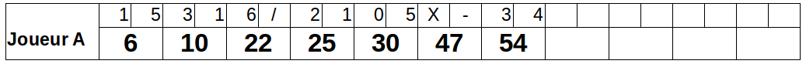
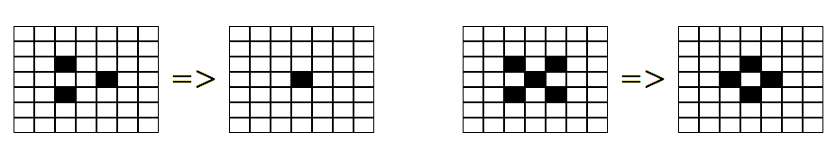
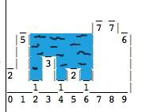

Scénario: Compléter toute ma todo liste
Etant donné que j’ai 2 tâches dans ma todo liste
Lorsque je complète toutes mes tâches
Alors ma todo liste est videTest
Driven
Development
Présentation rapide
Démonstration
Premier exercice
Points complémentaires
Deuxième exercice
Conclusion
Le sujet principal n’est pas le test
C’est un process de développement guidé par les exemples
L’objectif est de maintenir un rythme de développement
|
|
Une calculatrice gérant l’addition de plusieurs entiers
Ecrire un test et s’assurer qu’il échoue
Les valeurs en « dur » orientent le test suivant
Ecrire « du » code pour satisfaire le test
Passer rapidement au vert
Implémentation rapide
Ecrire « le » code que l’on va garder
Renommage, restructuration
Changement d’implémentation
Implémenter la fonction FizzBuzz qui prend en paramètre un nombre entre 1 et 100
Par défaut, retourner le nombre sous forme de chaîne de caratères
Si le nombre est un multiple de 3, retourner Fizz
Si le nombre est un multiple de 5, retourner Buzz
Pour les nombres multiple de 3 et de 5, retourner FizzBuzz
Se focaliser sur le comportement/besoin et non la manière
Penser utilisation avant implémentation
Ne pas modifier le test et le code en même temps
Prendre autant soin des tests que du code
Indépendance
Rapidité d’exécution
Reproductibilité
Lisibilité
Tester une seule chose à la fois
Le nom du test indique l’objectif
Framework de tests: Junit, TestNG
Outils de build: Maven, Ant
IDE: Eclipse, IntelliJ, NetBean
Intégration continue: Jenkins, Travis CI, GitLab CI
Couverture de code: Cobertura, Emma
Analyse de code: Sonar, Checkstyle, PMD, …
Plugins: MoreUnit, Inifinitest
Spécification exécutable
Code lisible
Indépendant de l’implémentation
Documentation à jour
Exemple d’utilisation du code
Spécification du comportement
KISS (Keep It simple, stupid)
On commence par une implémentation triviale
On restructure pour simplifier
YAGNI (You Ain’t Gonna Need It)
On ne développe que ce qui est nécessaire pour faire passer un test
On écrit un test que pour décrire un cas utilisateur
Baby steps
Approche itérative très courte
Construction organique
Feedback
Retour immédiat
Rythme de développement
La couverture est assurée par construction
On ne s’en préoccupe pas spécialement
Refactoring
Modification de l’implémentation sans changer le comportement
Elimination de la duplication
Amélioration de l’implémentation
Continuité du TDD
Encore plus orienté vers le métier
Rédaction en collaboration avec le métier
Syntaxe Gherkin: Given / When / Then
Scénario: Compléter toute ma todo liste
Etant donné que j’ai 2 tâches dans ma todo liste
Lorsque je complète toutes mes tâches
Alors ma todo liste est vide |
Bowling Game
Game of life
How much water ?
Tennis score
Tetris
La grille de bowling est constituée de 10 cadres.
Pour chaque cadre, le joueur à deux lancés pour faire tomber les 10 quilles.
Le score du cadre est le nombre de quilles tombées plus un bonus en cas de spare ou de strike.
Il y a spare lorsque qu’un joueur fait tomber toutes les quilles en deux coups. Le bonus est le nombre de quilles tombées au coup suivant
Il y a strike lorsque toutes les quilles tombent au premier essai. Le bonus est le score des deux coups suivants.

Pour un emplacement ‘peuplé':
Une cellule avec un ou aucun voisin meurt de solitude.
Une cellule avec quatre voisins ou plus meurt de surpopulation.
Une cellule avec deux ou trois voisins survit.
Pour un emplacement ‘vide’ ou ‘non peuplé’
Une cellule avec trois voisins devient peuplée.

Etant donnée une liste d’entiers représentant les hauteurs de colonnes
On cherche la quantité d’eau qui resterait prisonnière des cuvettes formées par les colonnes
 |
|
Afficher le score d’un jeu au tennis à partir d’une liste indiquant qui a marqué chaque point
Les points valent 15, 30, 40
Au delà de 40,
le premier avec 2 points d’écart gagne le jeu: "Game [A ou B]"
s’il n’y a pas 2 points d’écart, on affiche "Advantage [A ou B]"
sil y a égalité, on affiche "Deuce"
Exemples
AAAB ⇒ 40 - 15 | BBBB ⇒ Game B | ABABABA ⇒ Advantage A |
Afficher l’état
Déplacer une pièce (bas, droite, gauche)
Détecter les mouvements impossibles
Faire tourner une pièce
Supprimer les lignes complètes
Exemples
Descendre Tourner Ligne | X | | | | X | | X | | | | | | | => | X | | XXX | => | XX | | XXX| => | | | | | | | | | X | |XXXXX| | XXX| | | | | | | | | |X X | |X X | |-----| |-----| |-----| |-----| |-----| |-----|
Les méthodes privées
Les contributeurs
Rester indépendant de l’implémentation
Tester sur du code existant
Conception émergente
Composants prévus pour être testés
Composants prévus pour être réutilisés
Capacité à faire évoluer/modifier le code
On sait ce qui marche ou pas
Projet auto validé
Rapidité d’analyse des défauts
Le tests ne sont plus une option "lorsqu’il reste du temps"
On ne perd pas du temps à écrire les tests, on gagne du temps pour écrire le code
Extreme programming explained: embrace change
Kent Beck, Addison-Wesley, 1999
Test-Driven Development: By Example
Kent Beck. Addison-Wesley, 2002
Test-Driven Development: A Practical Guide
David Astels. Prentice Hall, 2003
Growing Object-Oriented Software, Guided by Tests
Steve Freeman, Nat Pryce, 2009
TDD: https://codemanship.wordpress.com/category/tdd/
Jason Gorman
TDD : pour que votre code soit testable et testé!
Xavier Nopre, 2019
Xavier Screen Cast 3, Premier test unitaire et intro TDD
présentation du TDD à partir de 6mn
Test-Driven Development (TDD) in Python 1 - The 3 Steps of TDD
Jason Gorman
Unit Testing Is The BARE MINIMUM
Dave Farley
Code Retreat: https://www.coderetreat.org
Meetup: https://www.meetup.com/fr-FR/software-craftsmanship-lyon/
Cyber dojo: http://cyber-dojo.org/
CodingDojo: http://codingdojo.org/kata/
Pour apprendre le TDD,
il faut le pratiquer